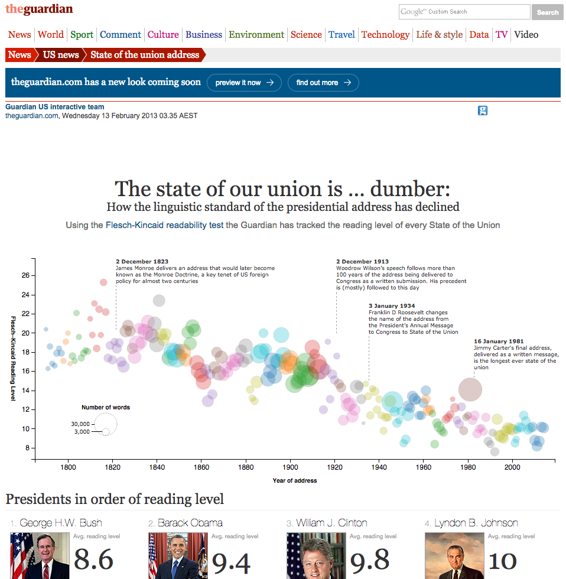
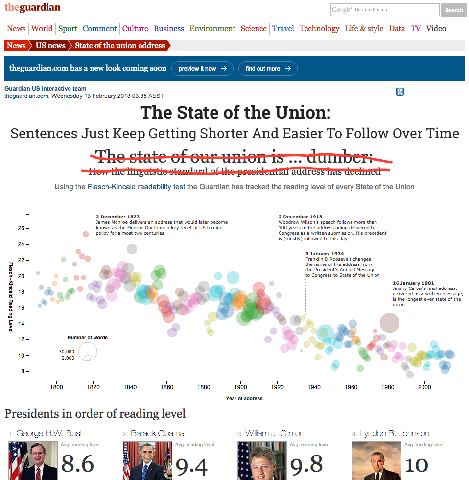

Web Accessibility @ UQ Library
Development Tools


UQ Library Homepage
Your browser does not support HTML5 video.
Your browser does not support HTML5 video.
Your browser does not support HTML5 video.
Your browser does not support HTML5 video.